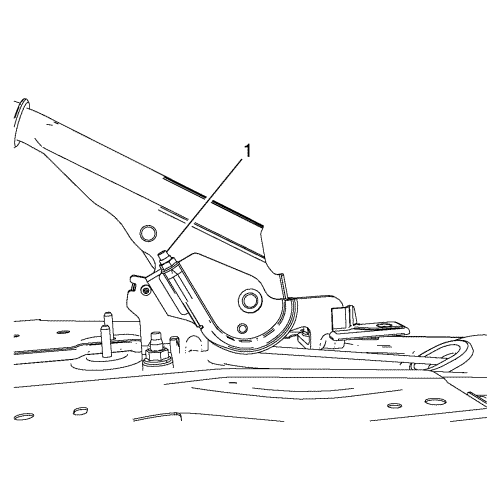

Advertencia : Consulte Advertencia relacionada con el polvo procedente de los frenos en la sección Prólogo
Nota: Cuando vaya a aflojar o apretar la tuerca de ajuste, utilice SÓLO HERRAMIENTAS DE MANO.
- Asegúrese de que la palanca del freno de mano esté en la posición de freno completamente suelto.
- Suelte el guardapolvo de la palanca del freno de mano, de la consola de piso, apretando suavemente hacia dentro los costados del retenedor del guardapolvo.

- Tire del guardapolvo para separarlo de la consola y dejar expuesta la tuerca de ajuste (1) del cable del freno de manos.
- Reduzca la tensión del sistema del cable del freno de mano, mediante la tuerca de ajuste del cable delantero.
Utilizando SÓLO HERRAMIENTAS DE MANO, afloje completamente la tuerca de ajuste (1), hasta el extremo de la varilla roscada del cable delantero.
- Elevar el vehículo y soportarlo de manera segura. Consultar Elevación del vehículo con un gato .
- Desmontar las ruedas traseras del vehículo. Consultar Desmontaje y montaje de la rueda y el neumático .
- Desmonte los tambores de freno. Consultar Sustitución del tambor de freno .
- Coloque el calibrador CH-21177-A en el punto de mayor diámetro interior del tambor de freno.
- Apriete bien, con la mano, el tornillo prisionero del calibrador CH-21177-A.
- Retire el calibrador CH-21177-A, del tambor de freno, y colóquelo sobre el conjunto de zapata de freno correspondiente, en su punto más ancho.
- Sujetando el calibrador de holgura entre zapata y tambor de freno CH-21177-A en su posición, inserte una galga de espesores adecuada entre un costado del calibrador CH-21177-A y el revestimiento de la zapata de freno correspondiente.
- Gire el tornillo de ajuste de la zapata de freno hasta que el revestimiento de la zapata de freno toque el calibrador CH-21177-A y la galga de espesores.
Especificaciones
Holgura entre el revestimiento de la zapata y el tambor de freno: 0,4 - 1,09 mm (0,016 - 0,043 pulg.).
- Repita los pasos anteriores para el conjunto de tambor y zapata de freno del otro lado.
- Monte los tambores de freno. Consultar Sustitución del tambor de freno .
- Ajuste el freno de mano. Consultar Ajuste del freno de mano .
- Instalar la llanta trasera y los conjuntos de rueda. Consultar Desmontaje y montaje de la rueda y el neumático .
- Bajar el vehículo.
- Coloque el guardapolvo de la palanca del freno de mano en la consola de piso y empújelo hacia abajo, para que encaje en su sitio.